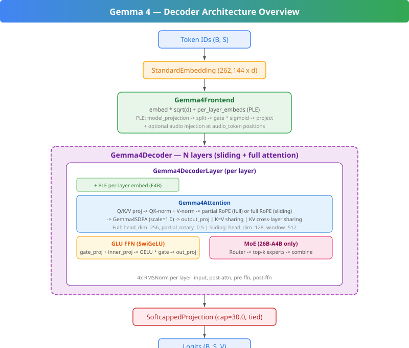
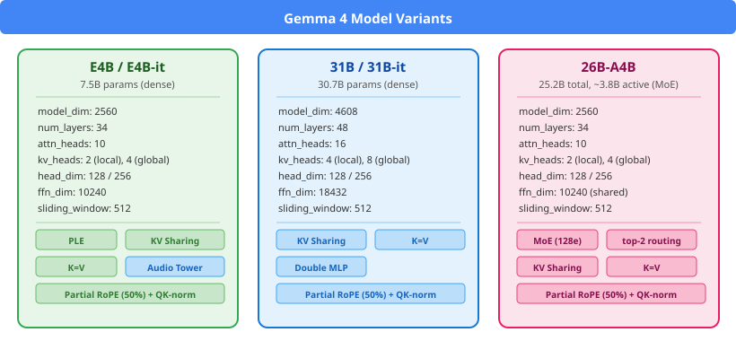

fairseq2.models.gemma4¶
The Gemma 4 module provides support for Google’s Gemma 4 model family, including dense (E2B, E4B, 31B) and Mixture-of-Experts (26B-A4B) variants with base and instruction-tuned versions. The architecture features Per-Layer Embeddings (PLE), partial rotary position encodings, KV sharing across attention layers, QK/V-norm, logit soft-capping, and an optional Conformer-based audio tower for multimodal inference.
Architecture Overview¶

Model Variants¶

Variant |
Params |
Layers |
model_dim |
Features |
Active Params |
|---|---|---|---|---|---|
E2B / E2B-it |
2B |
26 |
2048 |
KV-share |
2B (dense) |
E4B / E4B-it |
7.5B |
34 |
2560 |
PLE, Audio, KV-share |
7.5B (dense) |
31B / 31B-it |
30.7B |
48 |
4608 |
KV-share, Double MLP |
30.7B (dense) |
26B-A4B |
25.2B |
34 |
2560 |
MoE (128 experts, top-2) |
~3.8B |
Quick Start¶
from fairseq2.models.gemma4 import get_gemma4_model_hub, get_gemma4_tokenizer_hub
# Get the model hub
hub = get_gemma4_model_hub
# Load a model
model = hub.load_model("gemma4_e4b")
# Load corresponding tokenizer
tokenizer = get_gemma4_tokenizer_hub.load_tokenizer("gemma4_e4b")
# Encode text
encoder = tokenizer.create_encoder()
tokens = encoder("The future of AI is")
Available Models¶
The following model architectures are registered:
gemma4_e2b/gemma4_e2b_it- 2B parameters (dense)gemma4_e4b/gemma4_e4b_it- 7.5B parameters (dense, with PLE + audio)gemma4_31b/gemma4_31b_it- 30.7B parameters (dense)gemma4_26b_a4b/gemma4_26b_a4b_it- 25.2B total / ~3.8B active (MoE)
All models use:
Vocabulary size: 262,144
Tied embeddings with soft-capped final logits (cap=30.0)
Mixed sliding (window=512) and full (global) attention layers
QK-norm and V-norm (non-learnable) on attention
Partial rotary position encoding (50%) on full attention layers
GELU(tanh) activation in GLU feed-forward networks
Key Architectural Features¶
- Per-Layer Embeddings (PLE) — E4B only
A learned projection splits the input embedding into per-layer contributions, each gated by a sigmoid before being added to the hidden state at each decoder layer. This replaces the traditional single-embedding approach.
- KV Sharing
Adjacent sliding-attention layers share key-value projections. A SOURCE layer computes K/V; CONSUMER layers reuse the pre-computed K/V. This saves memory and compute without sacrificing quality.
- K=V Attention
On full (global) attention layers, the value projection is removed and the key projection output is reused as both K and V (after separate norms).
- Mixture of Experts (MoE) — 26B-A4B only
Each decoder layer contains a router that selects top-2 experts from a pool of 128 experts. The shared FFN runs in parallel with the expert mixture.
- Audio Tower — E4B only
A Conformer encoder processes log-mel spectrograms into audio embeddings that are injected at
<audio>token positions in the input sequence.
Model Configuration¶
Gemma4Config¶
- class fairseq2.models.gemma4.Gemma4Config(*, model_dim: int = 2560, max_seq_len: int = 131072, vocab_size: int = 262144, pad_idx: int | None = 0, tied_embeddings: bool = True, num_layers: int = 42, num_attn_heads: int = 8, num_key_value_heads: int = 2, head_dim: int = 256, global_head_dim: int = 512, num_global_key_value_heads: int | None = None, ffn_inner_dim: int = 10240, sliding_window: int = 512, rope_theta: float = 10000.0, rope_theta_global: float = 1000000.0, partial_rotary_factor: float = 0.25, attention_k_eq_v: bool = False, num_kv_shared_layers: int = 18, use_double_wide_mlp: bool = False, enable_moe: bool = False, num_experts: int | None = None, top_k_experts: int | None = None, moe_intermediate_size: int | None = None, final_logit_soft_cap: float | None = 30.0, vocab_size_per_layer_input: int = 262144, hidden_size_per_layer_input: int = 256, layer_types: list[str] = <factory>, rms_norm_eps: float = 1e-06, dropout_p: float = 0.0, init_std: float | None = 0.02, hidden_activation: str = 'gelu_pytorch_tanh', audio_config: ~fairseq2.models.gemma4.audio.config.Gemma4AudioConfig | None = None, audio_token_id: int = 258881)[source]¶
Bases:
objectHolds the configuration of a Gemma 4 model.
The default values correspond to the E4B architecture.
Key Parameters:
model_dim— Model dimensionality (2560 for E4B/26B-A4B, 4608 for 31B)num_layers— Number of decoder layers (34 or 48)num_attn_heads— Number of attention headsnum_key_value_heads— Number of key/value heads for GQAhead_dim— Head dimension for sliding attention (128)global_head_dim— Head dimension for full attention (256)sliding_window— Sliding attention window size (512)partial_rotary_factor— Fraction of head_dim using RoPE (0.5)has_ple— Whether to use Per-Layer Embeddingsenable_moe— Whether to use Mixture of Expertslayer_types— List of"sliding_attention"or"full_attention"per layerattention_k_eq_v— Whether K=V on full attention layers
- num_key_value_heads: int = 2¶
The number of key/value heads for Grouped Query Attention (sliding layers).
- global_head_dim: int = 512¶
The dimensionality of attention heads for full (global) attention layers.
- num_global_key_value_heads: int | None = None¶
Number of key/value heads for global attention layers. If None, defaults to num_key_value_heads.
- partial_rotary_factor: float = 0.25¶
Fraction of head_dim that gets rotary encoding in full attention layers.
- attention_k_eq_v: bool = False¶
If True, key projection output is reused as value (no separate v_proj) for full attention layers.
Number of consecutive decoder layers at the end that share KV projections.
- top_k_experts: int | None = None¶
Number of experts activated per token (only used when enable_moe=True).
- moe_intermediate_size: int | None = None¶
Intermediate size of each expert’s FFN (only used when enable_moe=True).
Dimension of the hidden representations for per-layer embeddings. Set to 0 to disable PLE.
- init_std: float | None = 0.02¶
The standard deviation to initialize input embeddings and projection weights.
The activation function used in FFN and PLE.
- audio_config: Gemma4AudioConfig | None = None¶
Audio tower configuration. None means text-only model.
Alias for hidden_size_per_layer_input.
Configuration Factories¶
- fairseq2.models.gemma4.get_gemma4_e4b_config() Gemma4Config[source]¶
Get configuration for Gemma4 E4B.
- fairseq2.models.gemma4.get_gemma4_e2b_config() Gemma4Config[source]¶
Get configuration for Gemma4 E2B (small dense, on-device).
E2B uses a 4:1 sliding:full attention pattern (every 5th layer is full) instead of E4B’s 5:1 (every 6th). It also uses
use_double_wide_mlpto compensate for parameter savings from aggressive KV sharing (20 layers).
- fairseq2.models.gemma4.get_gemma4_31b_config() Gemma4Config[source]¶
Get configuration for Gemma4 31B (dense).
- fairseq2.models.gemma4.get_gemma4_26b_a4b_config() Gemma4Config[source]¶
Get configuration for Gemma4 26B-A4B (MoE variant).
Model¶
Gemma4Model¶
- final class fairseq2.models.gemma4.Gemma4Model(model_dim: int, decoder_frontend: Gemma4Frontend, decoder: Gemma4Decoder, final_proj: Projection, pad_idx: int | None, max_seq_len: int, *, audio_tower: Module | None = None, audio_embedder: Module | None = None)[source]¶
Bases:
CausalLMGemma 4 decoder-only causal language model with optional audio.
- Parameters:
model_dim – The model dimensionality.
decoder_frontend – The decoder frontend (embedding + optional PLE).
decoder – The decoder stack.
final_proj – The projection to apply to decoder outputs.
pad_idx – The index of the pad symbol in the vocabulary.
max_seq_len – The maximum sequence length.
audio_tower – Optional audio tower for mel → projected features.
audio_embedder – Optional embedder to project audio features to text model space.
Top-level causal language model combining frontend, decoder, and final projection. Supports optional audio input via
audio_featuresparameter.- decoder_frontend: Gemma4Frontend¶
- decoder: Gemma4Decoder¶
- final_proj: Projection¶
- forward(seqs: Tensor, seqs_layout: BatchLayout, *, state_bag: IncrementalStateBag | None = None) Tensor[source]¶
- forward(seqs: Tensor, seqs_layout: BatchLayout, targets: Tensor, *, label_smoothing: float = 0.0, target_mask: Tensor | None = None, reduction: Literal['sum', 'mean'] = 'sum') Tensor
- forward(seqs: Tensor, seqs_layout: BatchLayout, targets: Tensor, *, label_smoothing: float = 0.0, target_mask: Tensor | None = None, reduction: Literal['sum', 'mean'] = 'sum', return_logits: Literal[False]) Tensor
- forward(seqs: Tensor, seqs_layout: BatchLayout, targets: Tensor, *, label_smoothing: float = 0.0, target_mask: Tensor | None = None, reduction: Literal['sum', 'mean'] = 'sum', return_logits: Literal[True]) tuple[Tensor, Tensor]
- forward(seqs: Tensor, seqs_layout: BatchLayout, targets: Tensor, *, label_smoothing: float = 0.0, target_mask: Tensor | None = None, reduction: Literal['sum', 'mean'] = 'sum', return_logits: bool = False) Tensor | tuple[Tensor, Tensor]
- Parameters:
seqs – Input token IDs. Shape:
(B, S).seqs_layout – Layout information.
targets – Target token IDs for loss computation.
state_bag – Incremental decoding state.
audio_features – Log-mel spectrogram. Shape:
(B, T, 128). When provided, audio tokens inseqs(identified byaudio_token_id) are replaced with encoded audio embeddings.label_smoothing – Label smoothing factor.
target_mask – Mask for targets.
reduction – Loss reduction method.
return_logits – If True, return both loss and logits.
- Returns:
Logits or loss (or both if return_logits=True).
- compute_loss(logits: Tensor, targets: Tensor, *, label_smoothing: float = 0.0, target_mask: Tensor | None = None, reduction: Literal['sum', 'mean'] = 'sum') Tensor[source]¶
Gemma4Factory¶
- class fairseq2.models.gemma4.Gemma4Factory(config: Gemma4Config, *, device: device | None = None, dtype: dtype | None = None, gangs: Gangs | None = None)[source]¶
Bases:
objectFactory for creating Gemma 4 model components.
- create_model() Gemma4Model[source]¶
Create the full Gemma 4 model.
- create_decoder_frontend(embed: Embedding) Gemma4Frontend[source]¶
Create the decoder frontend with optional PLE and audio injection.
- create_decoder() Gemma4Decoder[source]¶
Create the Gemma 4 decoder stack.
- create_decoder_layer(layer_idx: int, layer_type: str, is_full: bool, kv_role: KVProjectionRole) Gemma4DecoderLayer[source]¶
Create a single Gemma 4 decoder layer.
- Parameters:
layer_idx – Zero-based layer index.
layer_type –
"sliding_attention"or"full_attention".is_full – Whether this is a full (global) attention layer.
kv_role – KV projection sharing role for this layer.
- Returns:
A configured decoder layer.
- create_final_projection(embed: Embedding) Projection[source]¶
Create the final output projection with optional softcapping.
- Parameters:
embed – The token embedding (used for weight tying).
- Returns:
A projection, optionally wrapped with
SoftcappedProjection.
- create_audio_tower() Module | None[source]¶
Create the audio tower for mel-spectrogram encoding.
- Returns:
A
Gemma4AudioTowerif audio is configured,Noneotherwise.
- create_audio_embedder() Module | None[source]¶
Create the audio embedder to project audio features to text space.
- Returns:
A
Gemma4MultimodalAudioEmbedderif audio is configured,Noneotherwise.
- fairseq2.models.gemma4.create_gemma4_model(config: Gemma4Config, *, device: device | None = None, dtype: dtype | None = None) Gemma4Model[source]¶
Create a Gemma 4 language model.
- Parameters:
config – The Gemma 4 configuration.
device – The device on which to initialise the model.
dtype – The data type of the model parameters and buffers.
- Returns:
A Gemma 4 model.
Components¶
Gemma4Frontend¶
- class fairseq2.models.gemma4.Gemma4Frontend(model_dim: int, embed: Embedding, *, num_layers: int, ple_hidden_dim: int = 0, vocab_size_per_layer_input: int = 0, ple_norm: LayerNorm | None = None, audio_token_id: int | None = None, pad_idx: int | None = None, device: device | None = None, dtype: dtype | None = None)[source]¶
Bases:
ModuleGemma 4 decoder frontend with optional PLE and audio injection.
- Parameters:
model_dim – Model dimensionality.
embed – Token embedding table.
num_layers – Number of decoder layers.
ple_hidden_dim – Hidden dim for PLE. 0 disables PLE.
vocab_size_per_layer_input – Vocabulary size for PLE lookup.
ple_norm – RMSNorm for PLE projection (required when PLE enabled).
audio_token_id – Token ID used as placeholder for audio embeddings.
Nonedisables audio injection.pad_idx – Padding token index. Used to replace multimodal placeholder tokens in discrete PLE, matching HuggingFace.
device – Device.
dtype – Data type.
Handles token embedding, PLE computation, and optional audio embedding injection.
- embed_tokens_per_layer: StandardEmbedding | None¶
- forward(seqs: Tensor, seqs_layout: BatchLayout, *, state_bag: IncrementalStateBag | None = None, audio_embeds: Tensor | None = None, vision_features: Tensor | None = None) tuple[Tensor, BatchLayout, Tensor | None][source]¶
- Parameters:
seqs – Token IDs. Shape:
(B, S).seqs_layout – Layout information.
state_bag – Incremental decoding state.
audio_embeds – Pre-encoded audio embeddings from
audio_tower + audio_embedder. Shape:(B, T_a, M).vision_features – Unused (Gemma 4 has no vision tower).
- Returns:
Embeddings
(B, S, M)Layout
Per-layer embeddings
(B, S, L, ple_dim)orNone
Gemma4Decoder¶
- class fairseq2.models.gemma4.Gemma4Decoder(layers: Sequence[Gemma4DecoderLayer], layer_norm: LayerNorm, *, layer_kv_roles: Sequence[KVProjectionRole], layer_types: Sequence[str])[source]¶
Bases:
ModuleGemma 4 decoder stack with KV-sharing support.
- Parameters:
layers – Ordered sequence of
Gemma4DecoderLayer.layer_norm – Final RMSNorm applied after the last layer.
layer_kv_roles – Per-layer
KVProjectionRole.layer_types – Per-layer attention type strings (
"sliding_attention"or"full_attention").
Stacks decoder layers with KV sharing management across layers.
- layers: ModuleList¶
- forward(seqs: Tensor, seqs_layout: BatchLayout, *, state_bag: IncrementalStateBag | None = None, per_layer_embeds: Tensor | None = None) Tensor[source]¶
- Parameters:
seqs – Hidden states. Shape:
(B, S, M).seqs_layout – Batch layout for attention masking.
state_bag – Incremental state bag for KV-cache.
per_layer_embeds – PLE embeddings. Shape:
(B, S, num_layers, ple_dim).Nonewhen PLE is disabled.
- Returns:
Decoder output. Shape:
(B, S, M).
Gemma4DecoderLayer¶
- class fairseq2.models.gemma4.Gemma4DecoderLayer(self_attn: MultiheadAttention, ffn: FeedForwardNetwork, *, input_layernorm: LayerNorm, post_attention_layernorm: LayerNorm, pre_feedforward_layernorm: LayerNorm, post_feedforward_layernorm: LayerNorm, per_layer_input_gate: Linear | None = None, per_layer_projection: Linear | None = None, post_per_layer_input_norm: LayerNorm | None = None, router: Module | None = None, experts: Module | None = None, post_feedforward_layernorm_1: LayerNorm | None = None, pre_feedforward_layernorm_2: LayerNorm | None = None, post_feedforward_layernorm_2: LayerNorm | None = None, layer_scalar_init: float = 1.0, activation_fn: str = 'gelu_pytorch_tanh')[source]¶
Bases:
ModuleGemma 4 decoder layer with optional MoE and Per-Layer Embeddings (PLE).
The layer follows a pre-norm architecture with five sequential stages:
Self-attention – input layer-norm, attention, post-attention norm, then additive residual.
Dense FFN – pre-FFN norm, MLP.
Optional MoE – when present, runs in parallel to the dense FFN. The router selects top-k experts, and the sparse expert output is combined with the dense MLP output via additional norms.
Optional PLE – Per-Layer Embedding gating, projection, and norm with an additive residual.
Layer scalar – element-wise scaling of the output.
- Parameters:
self_attn – The multi-head self-attention module.
ffn – The dense feed-forward network.
input_layernorm – Pre-attention layer normalization.
post_attention_layernorm – Post-attention layer normalization.
pre_feedforward_layernorm – Pre-FFN layer normalization.
post_feedforward_layernorm – Post-FFN layer normalization (applied after the dense-MLP path, or after dense+MoE merge).
per_layer_input_gate – PLE gating projection (model_dim -> model_dim).
per_layer_projection – PLE output projection (ple_dim -> model_dim).
post_per_layer_input_norm – PLE post-normalization.
router – MoE router module. Expected to return
(logits, top_k_weights, top_k_indices)when called with(T, D)input.experts – MoE experts module. Expected to accept
(hidden_states, top_k_indices, top_k_weights)and return(T, D)output.post_feedforward_layernorm_1 – Norm applied to dense MLP output before merging with MoE output.
pre_feedforward_layernorm_2 – Norm applied to flattened residual before feeding into MoE experts.
post_feedforward_layernorm_2 – Norm applied to MoE expert output before merging with dense MLP output.
layer_scalar_init – Initial value for the learned layer scalar.
activation_fn – Activation function name for PLE gating. Only
"gelu_pytorch_tanh"is currently supported.
Single decoder layer with attention, FFN, optional PLE, and optional MoE.
- self_attn: MultiheadAttention¶
- ffn: FeedForwardNetwork¶
- forward(seqs: Tensor, seqs_layout: BatchLayout, bias_cache: AttentionBiasCache, per_layer_input: Tensor | None = None, *, state_bag: IncrementalStateBag | None = None, pre_computed_kv: tuple[Tensor, Tensor] | None = None, kv_storage_callback: Callable[[Tensor, Tensor], None] | None = None) Tensor[source]¶
Run one decoder layer.
- Parameters:
seqs – Hidden states. Shape: \((N, S, D)\) where \(N\) is the batch size, \(S\) the sequence length, and \(D\) the model dimensionality.
seqs_layout – Batch layout for attention masking.
bias_cache – Attention bias cache (causal mask, etc.).
per_layer_input – Per-layer embedding input for PLE. Shape: \((N, S, D_{ple})\). Required when PLE is enabled.
state_bag – Incremental state bag for KV-cache during generation.
pre_computed_kv – Pre-computed
(K, V)tensors from a SOURCE layer for KV sharing. Passed through to the attention module.kv_storage_callback – Callback invoked with
(K, V)after attention computation so that a SOURCE layer can store them for downstream CONSUMERs.
- Returns:
Decoder layer output. Shape: same as
seqs.
Gemma4Attention¶
- class fairseq2.models.gemma4.Gemma4Attention(model_dim: int, num_heads: int, sdpa: SDPA, *, head_dim: int = 256, num_key_value_heads: int | None = None, pos_encoder: PositionEncoder | None = None, q_norm: LayerNorm | None = None, k_norm: LayerNorm | None = None, v_norm: LayerNorm | None = None, k_eq_v: bool = False, is_kv_consumer: bool = False, state_factory: AttentionStateFactory | None = None, qkv_proj_init_fn: Callable[[Linear], None] | None = None, output_proj_init_fn: Callable[[Linear], None] | None = None)[source]¶
Bases:
MultiheadAttentionMulti-head attention for Gemma 4 decoder layers.
Key features:
Partial RoPE — when
pos_encoder.encoding_dim < head_dim, only the firstencoding_dimdimensions are rotated and the remainder pass through unchanged. Full (global) attention layers typically useglobal_head_dim=512withpartial_rotary_factor=0.25so that 128 dimensions are rotated. Sliding (local) attention layers rotate all 256 dimensions.K=V — when k_eq_v is
Truethe constructor does not create a V projection. Instead, the K output (afterk_norm) is reused as V and thenv_normis applied.V norm — an optional
LayerNorm(typically RMSNorm withelementwise_affine=False) applied to V after projection (or after K reuse).KV sharing — SOURCE layers store K/V via kv_storage_callback; CONSUMER layers receive pre-computed K/V via pre_computed_kv.
QK-Norm — per-head
q_norm/k_normapplied after unflatten.
- Parameters:
model_dim – The dimensionality of the model.
num_heads – The number of query attention heads.
sdpa – The scaled dot-product attention module.
head_dim – The dimensionality of each attention head.
num_key_value_heads – The number of key/value heads for Grouped Query Attention. If
None, defaults to num_heads (standard MHA).pos_encoder – Position encoder (typically RoPE). When its
encoding_dimis smaller than head_dim, partial rotation is applied.q_norm – Layer norm applied to queries after unflatten.
k_norm – Layer norm applied to keys after unflatten.
v_norm – Layer norm applied to values (typically RMSNorm without learnable scale).
k_eq_v – If
True, skip the V projection and reuse K output as V.is_kv_consumer – If
True, this layer receives pre-computed K/V from a SOURCE layer via KV sharing. K/V projections and k_norm are not created (matching HuggingFace, which also omits these for consumer layers).state_factory – Factory for
AttentionState(incremental decoding cache).qkv_proj_init_fn – Custom initializer for Q/K/V projection weights.
output_proj_init_fn – Custom initializer for the output projection weights.
Multi-head attention with QK-norm, V-norm, optional K=V, partial RoPE, and KV sharing support (source/consumer roles).
- forward(seqs: Tensor, seqs_layout: BatchLayout, keys: Tensor, keys_layout: BatchLayout, values: Tensor, bias_cache: AttentionBiasCache, *, state_bag: IncrementalStateBag | None = None, pre_computed_kv: tuple[Tensor, Tensor] | None = None, kv_storage_callback: Callable[[Tensor, Tensor], None] | None = None) Tensor[source]¶
- Parameters:
seqs – The query sequences. Shape:
(B, S, model_dim).seqs_layout – Batch layout for seqs.
keys – The key sequences (typically same as seqs for self-attention).
keys_layout – Batch layout for keys.
values – The value sequences (typically same as seqs for self-attention).
bias_cache – Attention bias cache.
state_bag – Incremental state bag for decoding.
pre_computed_kv – Pre-computed
(K, V)tensors from a SOURCE layer. When provided, K/V projection and RoPE are skipped (CONSUMER path).kv_storage_callback – Callback invoked with
(K, V)after computation so that a SOURCE layer can store them for downstream CONSUMERs.
- Returns:
The attention output. Shape:
(B, S, model_dim).
MoE Components¶
- class fairseq2.models.gemma4.Gemma4Router(model_dim: int, num_experts: int, top_k: int, *, rms_norm_eps: float = 1e-06)[source]¶
Bases:
ModuleTop-k router for Gemma 4 MoE with RMSNorm and per-expert scaling.
The routing pipeline is:
RMSNorm the input (no learnable affine –
elementwise_affine=False).Element-wise multiply by a learnable
scalevector and a constantscalar_root_size = model_dim ** -0.5.Project to
num_expertslogits via a bias-free linear layer.Softmax over experts, then select top-k.
Renormalise selected weights to sum to 1, then multiply by
per_expert_scale.
Reference:
Gemma4TextRouterin HuggingFacemodeling_gemma4.py.- Parameters:
model_dim – The dimensionality of the model (
hidden_size).num_experts – The total number of routed experts.
top_k – The number of experts activated per token.
rms_norm_eps – Epsilon for the RMSNorm layer.
- forward(hidden_states: Tensor) tuple[Tensor, Tensor, Tensor][source]¶
- Parameters:
hidden_states – Token representations of shape
(T, D)where T is the (flattened) number of tokens.- Returns:
A 3-tuple of:
router_probs– full softmax probabilities(T, E)top_k_weights– scaled top-k weights(T, K)top_k_indices– selected expert indices(T, K)
- class fairseq2.models.gemma4.Gemma4Experts(model_dim: int, num_experts: int, moe_intermediate_size: int, *, activation_fn: str = 'gelu_pytorch_tanh')[source]¶
Bases:
ModuleFused expert layer with 3-D weight parameters for Gemma 4 MoE.
Each expert is a gated MLP (gate + up -> activation -> down) stored as a single
(E, 2*I, D)gate-up projection and a(E, D, I)down projection. Unlike Qwen/LLaMA MoE, Gemma 4 uses GELU (with tanh approximation) instead of SiLU.Reference:
Gemma4TextExpertsin HuggingFacemodeling_gemma4.py.- Parameters:
model_dim – The dimensionality of the model (
hidden_size).num_experts – The total number of routed experts.
moe_intermediate_size – The intermediate (inner) dimension of each expert’s FFN.
activation_fn – The activation function name.
"gelu_pytorch_tanh"maps totorch.nn.functional.gelu(..., approximate="tanh").
- forward(hidden_states: Tensor, top_k_indices: Tensor, top_k_weights: Tensor) Tensor[source]¶
- Parameters:
hidden_states – Token representations of shape
(T, D).top_k_indices – Selected expert indices of shape
(T, K).top_k_weights – Routing weights of shape
(T, K).
- Returns:
Expert-mixed output of shape
(T, D).
Audio Tower¶
- class fairseq2.models.gemma4.Gemma4AudioConfig(*, hidden_size: int = 1024, output_proj_dims: int = 1536, num_hidden_layers: int = 12, num_attention_heads: int = 8, conv_kernel_size: int = 5, residual_weight: float = 0.5, attention_chunk_size: int = 12, attention_context_left: int = 13, attention_context_right: int = 0, attention_logit_cap: float = 50.0, rms_norm_eps: float = 1e-06, gradient_clipping: float = 10000000000.0, subsampling_conv_channels: tuple[int, int] = (128, 32), input_feat_size: int = 128)[source]¶
Bases:
objectConfiguration for the Gemma 4 audio tower (USM Conformer).
Default values correspond to the E4B model.
Audio encoder hidden dimension.
Number of conformer layers.
- num_attention_heads: int = 8¶
Number of attention heads. head_dim = hidden_size / num_attention_heads.
- final class fairseq2.models.gemma4.Gemma4AudioTower(audio_config: Gemma4AudioConfig, *, device: device | None = None, dtype: dtype | None = None)[source]¶
Bases:
ModuleGemma4 audio tower for processing mel-spectrograms.
Pipeline: 1. Mel-spectrogram (N, T, 128) -> Subsample (4x downsample) -> (N, T/4, 1024) 2. Conformer encoder (12 layers, NO reduction) -> (N, T/4, 1024) 3. Output projection (Linear with bias) -> (N, T/4, 1536)
The output_proj is the only layer in the audio tower with bias. Unlike Gemma3n, there is no reduction factor in the conformer encoder.
- subsample: Gemma4SubsampleConvProjection¶
- encoder: Gemma4ConformerEncoder¶
- output_proj: torch.nn.Linear¶
- final class fairseq2.models.gemma4.Gemma4ConformerEncoder(config: Gemma4AudioConfig, *, device: device | None = None, dtype: dtype | None = None)[source]¶
Bases:
ModuleGemma4 audio encoder using conformer architecture.
Unlike Gemma3n, does NOT apply reduction factor downsampling. The temporal resolution from subsample (T/4) is preserved.
- layers: ModuleList¶
- forward(seqs: Tensor, seqs_layout: BatchLayout, mask: Tensor | None = None) Tensor[source]¶
- Parameters:
seqs – Audio features. Shape: \((N,T,H)\).
seqs_layout – Layout information for the sequences.
mask – Where True=masked (invalid). Shape: \((N,T)\).
- Returns:
Encoded features. Shape: \((N,T,H)\) – NO reduction.
- final class fairseq2.models.gemma4.Gemma4ConformerBlock(*, ffn1_layer_norm: Gemma4AudioRMSNorm, ffn1: Gemma4AudioFFN, ffn1_post_layer_norm: Gemma4AudioRMSNorm, self_attn_layer_norm: Gemma4AudioRMSNorm, self_attn: Gemma4ConformerAttention, self_attn_post_norm: Gemma4AudioRMSNorm, conv_layer_norm: Gemma4AudioRMSNorm, conv: Gemma4AudioConvModule, ffn2_layer_norm: Gemma4AudioRMSNorm, ffn2: Gemma4AudioFFN, ffn2_post_layer_norm: Gemma4AudioRMSNorm, layer_norm: Gemma4AudioRMSNorm, gradient_clipping: float = 10000000000.0, residual_weight: float = 0.5)[source]¶
Bases:
TransformerEncoderLayerGemma4 conformer block.
Forward flow:
FFN1: clamp -> pre_norm -> ffn -> clamp -> post_norm -> *0.5 -> residual Attn: clamp -> pre_norm -> self_attn -> clamp -> post_norm -> residual Conv: (mask) -> pre_norm -> conv -> residual FFN2: clamp -> pre_norm -> ffn -> clamp -> post_norm -> *0.5 -> residual Block: clamp -> layer_norm
- ffn1_layer_norm: Gemma4AudioRMSNorm¶
- ffn1: Gemma4AudioFFN¶
- ffn1_post_layer_norm: Gemma4AudioRMSNorm¶
- self_attn_layer_norm: Gemma4AudioRMSNorm¶
- self_attn: Gemma4ConformerAttention¶
- self_attn_post_norm: Gemma4AudioRMSNorm¶
- conv_layer_norm: Gemma4AudioRMSNorm¶
- conv: Gemma4AudioConvModule¶
- ffn2_layer_norm: Gemma4AudioRMSNorm¶
- ffn2: Gemma4AudioFFN¶
- ffn2_post_layer_norm: Gemma4AudioRMSNorm¶
- layer_norm: Gemma4AudioRMSNorm¶
- final class fairseq2.models.gemma4.Gemma4ConformerAttention(model_dim: int, num_heads: int, sdpa: Gemma4ConformerSDPA, *, bias: bool = False, use_clipping: bool = True, device: device | None = None, dtype: dtype | None = None)[source]¶
Bases:
ModuleSelf-attention for Gemma4 conformer with chunked local attention.
All linear projections use
Gemma4ClippedLinearto match HF’sGemma4ClippableLinearwrappers with input/output clamping.- q_proj: Gemma4ClippedLinear¶
- k_proj: Gemma4ClippedLinear¶
- v_proj: Gemma4ClippedLinear¶
- output_proj: Gemma4ClippedLinear¶
- sdpa: Gemma4ConformerSDPA¶
- final class fairseq2.models.gemma4.Gemma4SubsampleConvProjection(input_feat_size: int = 128, hidden_size: int = 1024, conv_channel_sizes: tuple[int, int] = (128, 32), *, device: device | None = None, dtype: dtype | None = None)[source]¶
Bases:
ModuleSubsample mel-spectrogram and project to audio encoder hidden size.
Applies two 2D convolution blocks with LayerNorm (not CumulativeGroupNorm as in Gemma3n) to downsample the mel-spectrogram by 4x in both time and frequency dimensions, then projects to the audio encoder hidden size.
Uses symmetric padding (padding=1 on freq), matching HF’s Gemma4 reference.
- conv_0: Conv2d¶
- conv_1: Conv2d¶
- activation: ReLU¶
- final class fairseq2.models.gemma4.Gemma4MultimodalAudioEmbedder(output_proj_dims: int, text_model_dim: int, rms_norm_eps: float = 1e-06, *, device: device | None = None, dtype: dtype | None = None)[source]¶
Bases:
ModuleProjects audio tower output to text model space.
Much simpler than Gemma3n’s embedder – no hard/soft token distinction, no embedding lookup table. Applies
RMSNorm(without learnable scale) followed by aLinearprojection fromoutput_proj_dimstotext_model_dim.Note: HF does NOT use ClippableLinear for the embedder projection – the checkpoint key is
model.embed_audio.embedding_projection.weight(plainnn.Linear, no clipping buffers).- embedding_pre_projection_norm: Gemma4AudioRMSNorm¶
Tokenizer¶
Gemma4Tokenizer¶
- final class fairseq2.models.gemma4.Gemma4Tokenizer(model: HuggingFaceTokenModel)[source]¶
Bases:
TokenizerGemma 4 tokenizer wrapping HuggingFace
tokenizer.json.Tokenizer for Gemma 4 models. Uses SentencePiece with a 262,144-token vocabulary. Supports chat template formatting for instruction-tuned variants.
- create_encoder(*, task: str | None = None, lang: str | None = None, mode: str | None = None, device: device | None = None, pin_memory: bool = False) TokenEncoder[source]¶
- create_decoder(*, skip_special_tokens: bool = False) TokenDecoder[source]¶
- property vocab_info: VocabularyInfo¶
- apply_chat_template(conversation: list[dict[str, str]], *, tokenize: bool = True, add_generation_prompt: bool = False, **kwargs: Any) Any[source]¶
Apply Gemma 4 chat template to format a conversation.
- Parameters:
conversation – List of messages with
'role'and'content'keys. Roles can be'user','assistant'/'model', or'system'.tokenize – If
True, return token IDs. IfFalse, return the formatted string.add_generation_prompt – If
True, append prompt for the model to continue.kwargs – Additional arguments passed to HuggingFace
apply_chat_template.
- Returns:
Token IDs (
list[int]) if tokenize isTrue, formatted string otherwise.
- fairseq2.models.gemma4.load_gemma4_tokenizer(path: Path, config: None) Tokenizer[source]¶
Load Gemma 4 tokenizer from HuggingFace
tokenizer.json.- Parameters:
path – Path to the tokenizer directory containing
tokenizer.json.config – Config (unused, always
Nonefor Gemma 4).
- Returns:
A
Gemma4Tokenizerinstance.
Hub Accessors¶
- fairseq2.models.gemma4.get_gemma4_model_hub = <fairseq2.models.hub.ModelHubAccessor object>¶
Creates a
ModelHubinstance when called.This class provides a strongly-typed way to access model hubs. Its direct use is meant for model authors rather than library users.
See
src/fairseq2/models/llama/hub.pyas an example.The use of ModelHubAccessor for model authors¶from fairseq2.models import ModelHubAccessor # Defined in the Python module where the model is implemented. get_my_model_hub = ModelHubAccessor( family_name="my_model_family", kls=MyModel, config_kls=MyModelConfig ) # `get_my_model_hub()` is treated as a standalone function by the model # users in other parts of the code like below: model_config = MyModelConfig() model = get_my_model_hub().create_new_model(model_config)
- fairseq2.models.gemma4.get_gemma4_tokenizer_hub = <fairseq2.data.tokenizers.hub.TokenizerHubAccessor object>¶
HuggingFace Interop¶
- fairseq2.models.gemma4.convert_gemma4_state_dict(state_dict: dict[str, object], config: Gemma4Config) dict[str, object][source]¶
Convert a HuggingFace Gemma 4 state dictionary to fairseq2 format.
- Parameters:
state_dict – The HuggingFace Gemma 4 state dictionary.
config – The Gemma 4 configuration.
- Returns:
The fairseq2-compatible state dictionary.
When
audio_configisNone(text-only), all audio tower and audio embedder parameters are filtered out. When audio is enabled, the audio keys are mapped through_HG_KEY_MAP, stripping the.linear.sub-module prefix from ClippableLinear wrappers. ClippableLinear clipping buffers (input_min,input_max,output_min,output_max) are mapped to the correspondingGemma4ClippedLinearbuffers in the fairseq2 model.When
tied_embeddingsisTrue, the HF checkpoint omitslm_head.weight(it is tied to the embedding). The fairseq2 model’sTiedProjectionstill registers the shared weight as its own parameter (final_proj.proj.weight), so we copy the embedding weight into that slot after conversion.Bidirectional state dict conversion between HuggingFace Transformers and fairseq2 formats. Handles weight transpositions, key remapping, PLE weight splitting/merging, and MoE parameter reshaping.
Distributed Training¶
- fairseq2.models.gemma4.apply_fsdp_to_gemma4(model: Gemma4Model, granularity: str, wrapper: FSDPWrapper) Module[source]¶
Apply Fully Sharded Data Parallelism to a Gemma 4 model.
- fairseq2.models.gemma4.apply_ac_to_gemma4(model: Gemma4Model, every_nth_layer: int) Module[source]¶
Apply activation checkpointing to a Gemma 4 model.
Constants¶
- fairseq2.models.gemma4.GEMMA4_FAMILY = "gemma4"¶
str(object=’’) -> str str(bytes_or_buffer[, encoding[, errors]]) -> str
Create a new string object from the given object. If encoding or errors is specified, then the object must expose a data buffer that will be decoded using the given encoding and error handler. Otherwise, returns the result of object.__str__() (if defined) or repr(object). encoding defaults to sys.getdefaultencoding(). errors defaults to ‘strict’.
The family name identifier for Gemma 4 models.
SFT Recipe Config¶
A pre-built SFT recipe configuration for GSM8K fine-tuning is provided:
recipes/lm/sft/configs/gemma4_e4b_gsm8k.yaml
Example usage:
fairseq2 lm sft --config recipes/lm/sft/configs/gemma4_e4b_gsm8k.yaml
See Also¶
fairseq2.models.hub — Model hub API reference
Add Your Own Model — Tutorial on adding new models
Assets — Understanding the asset system